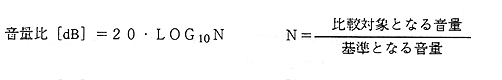
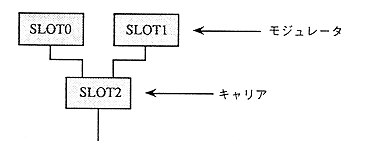

It will be.
Specifically, when the volume to be compared is double the reference volume (waveform amplitude), the volume ratio is 6 [dB]. Also, 1 times is 0 [dB], 3 times is 10 [dB].
Conversely, if the volume to be compared is lower than the standard volume, this value [dB] takes a negative value (a negative value). For example, when it is 1/2 times the standard, it will be -6 [dB].
